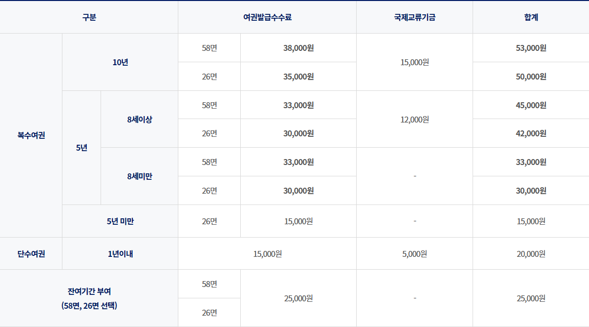

<div class="m_main">
            <div class="m_container">
                
                
                <div class="m_center">
                    <div class="m_contents">
                        <div class="top_con">
                            <div class="mc_title">
                                <h2>여권발급</h2>
                                <div class="mc_tit_img">
                                    
                                    
                                </div>
                            </div>
                            <div class="m_navi">
                                <ul class="mc_navi">
                                    <li><span>▶</span></li>
                                    <li>민원창구 <span>▶</span></li>
                                    <li>여권발급안내 <span>▶</span></li>
                                    <li>여권발급</li>
                                </ul>
                            </div>
                            <div class="m_t_b_line">
                                
                            </div>
                        </div>
                        
                        <h3>여권신청 및 발급</h3>
    
                        <h4>여권발급절차</h4>
    
                        <div class="p_port_stap">
                            
                        </div>
    
                        <h4>신청기관</h4>
    
                        <p>주소지에 관계없이 대한민국 모든 구·군 시청</p>
                        
                        <h4>신청인</h4>
    
                        <p>· 만18세 이상 성인 : 본인(대리 신청 불가)</p>
                        <p>· 미성년자(만18세 미만자) : 법정대리인이 신청</p>
    
                        <h4>주민등록번호(뒷자리)없는 여권발급(2020.12.21.시행)</h4>
    
                        <p>· 주민번호(뒷자리)없이 발급된 여권과 함께 여권정보증명서를 제시하면 신분증으로 활용가능</p>
                        <p>· ※여권정보증명서란?<br>　주민등록번호 없는 여권을 신분증으로 활용할 수 있도록 여권명의인이 여권발급정보 및 주민등록번호를 확인하기 위한 문서로 여권사무대행기간(예시:동래구청),재외공관 및 무인민원발급기<br>　 에서 발급 가능(21년 중 온라인 발급추친)</p>
    
                        <h4>공통구비서류</h4>
    
                        <p>· 여권발급 신청서 1부<br>　＊반드시 컬러프린트로 인쇄하여 작성<br>　＊여권발급신청서는 여권명의인이 자필로 작성<br>　(단, 18세미만의 경우는 법정대리인이 자필로 작성)</p>
                        <p>· 여권용 사진 2매</p>
                        <p>· 신분증<br>　＊유효한 주민등록증(발급사실확인서), 운전면허증, 이외 국가기관이 발급한 신분증 등</p>
                        <p>· <b>구 여권(유효기간 남아 있는 경우)</b></p>
    
    
                        <h3>여권의 재발급</h3>
                        
                        <h4>분실재발급</h4>
    
                        <p>· 구비서류</p>
                        <p>　- 여권발급신청서</p>
                        <p>　- 신분증</p>
                        <p>　- 여권용 사진 2매</p>
                        <p>　- 여권분실신고서</p>
                        
                        <h4>훼손재발급</h4>
                        
                        <p>· 구비서류</p>
                        <p>　- 여권발급신청서</p>
                        <p>　- 신분증</p>
                        <p>　- 여권용 사진 2매</p>
                        <p>　- 훼손여권</p>
                        
                        <h4>성명(개명·로마자성명 정정), 주민등록번호 등 정정 재발급</h4>
                        
                        <p>· 구비서류</p>
                        <p>　- 여권발급신청서</p>
                        <p>　- 신분증</p>
                        <p>　- 여권용 사진 2매</p>
                        <p>　- 구여권</p>
                        <p>· 로마자성명 표기의 정정의 변경허용요건 </p>
                        <p>　- 최종 여권의 로마자성명 표기 변경은 신원 확인의 기준이 되므로 엄격히 제한됨</p>
                        <p>　- 법령에 따라 변경한 경우라도 로마자성명 변경 후 과거 여행국을 다시 여행하는 경우 입국심사 시 위·변조 여권으로 오인 받아 입국 거부 등 불이익을 받을 수 있음</p>
                        <p>　- ※ 여권명의인 필요에 의한 개명 및 로마자성명 정정 재발급시에는 신규여권 발급 수수료 납부</p>
    
                        <h3>여권발급수수료(차세대 남색 전자여권)</h3>
                        
    
                        <h3>민원실 배치도</h3>
                        <div class="ps_chart">
                            
                        </div>
    
                        <h3>여권발급수수료(기존 녹색 전자여권)</h3>
                        <p>＊22.5.31~재고 소진 시까지 (24.12.31) 잔여기간 부여 및 단수여권 발급 희망자는 기존 녹색 전자여권 신청 불가</p>
    
                        <table class="ps_tb_01">
                            <thead>
                                <tr>
                                    <th colspan="2">구분</th>
                                    <th colspan="2">여권발급수수료</th>
                                    <th>국제교류기금</th>
                                    <th>합계</th>
                                </tr>
                                <tr>
                                    <th>복수여권</th>
                                    <th>4년 11개월</th>
                                    <td>48면</td>
                                    <td>15,000원</td>
                                    <td>-</td>
                                    <td>15,000원</td>
                                </tr>
                            </thead>
                        </table>
    
                        <h3>여권·국제면허증 원스톱 서비스</h3>
                        <p>※ 여권 발급과 동시 신청만 가능</p>
    
                        <h4>구비서류</h4>
                        <p>· 국제운전면허증 신청서</p>
                        <p>· 운전면허증</p>
                        <p>· 최근6개월 이내 촬영한 여권용 사진 1매</p>
    
                        <div class="faction">
                            <div class="fac_box">
                                <div class="open_box">
                                    <a href="#x"></a>
                                </div>
                                <div class="open_text">
                                    본 저작물은 <span>'공공누리'</span> <a href="#x" class="fac_t_link">제4유형:출처표시+상업적 이용금지+변경금지</a> 조건에 따라 이용 할 수 있습니다.
                                </div>
                            </div>
    
                            <ul class="damdang">
                                <li><b>담당부서</b>민원여권과</li>
                                <li><b>담당자</b>주한솔</li>
                                <li><b>문의전화</b>051-550-4291</li>
                            </ul>
    
                            <div class="question">
                                <div class="quest">
                                    <p>이 페이지에서 제공하는 정보에 대하여 어느 정도 만족하셨습니까?</p>
                                    <div class="input_radio">
                                        <label>
                                            <input type="radio">매우만족
                                            <input type="radio">만족
                                            <input type="radio">보통
                                            <input type="radio">불만족
                                            <input type="radio">매우불만족
                                        </label>
                                    </div>
                                </div>
    
                                <div class="opinion">
                                    <label>
                                        <input id="coment" type="text" placeholder="여러분의 의견을 남겨주세요">
                                        <a href="#x">의견등록</a>
                                    </label>
                                </div>
    
                            </div>
                        </div>
                    </div>
                </div>
            </div>
        </div>